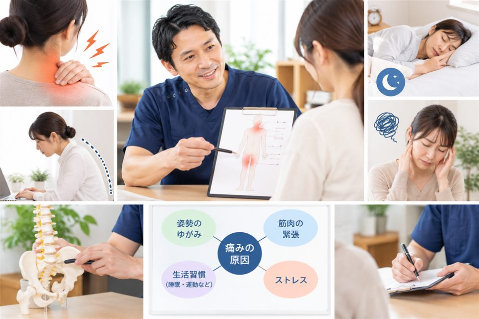
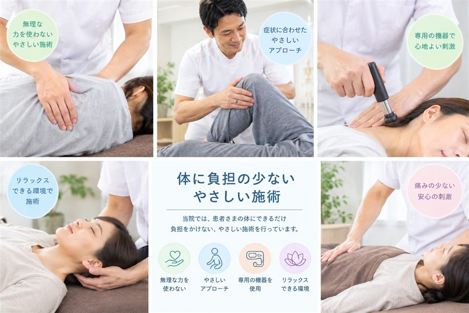
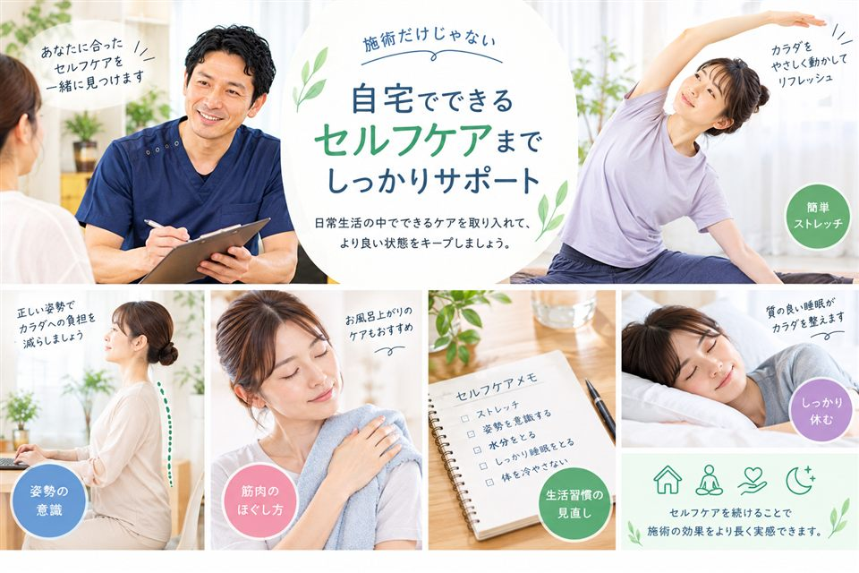

整体院について
痛みのその場しのぎではなく、原因にアプローチして再発しにくい体づくりをめざしています。
ごあいさつ
数ある整体院の中から当院のページをご覧いただき、ありがとうございます。当院には「いろいろ試したけれど良くならなかった」という方が多くいらっしゃいます。慢性的な不調には、日々の姿勢や体の使い方など、いくつもの要因が重なっていることがほとんどです。だからこそ、まずはじっくりお話をうかがい、体の状態を一緒に確認することを大切にしています。つらい症状を減らし、その状態を保てるところまで、責任を持ってサポートいたします。
院長 ◯◯ ◯◯
当院が大切にしている3つのこと
その場しのぎで終わらせず、良い状態を長く保つために、
私たちが施術の前後で必ず大切にしていることをご紹介します。

原因を一緒に整理する
肩や腰が痛いとき、痛みが出ている場所だけに原因があるとは限りません。長時間のデスクワークで前かがみが続いていたり、片側ばかりに体重をかけるクセがあったりと、日々の積み重ねが不調の背景にあることがほとんどです。
そのため当院では、初回にじっくりお時間をとり、いつから・どんな場面で辛いのかをうかがいます。あわせて姿勢や動きを確認し、痛みの原因がどこにありそうかを、専門用語を使わずにご説明します。
- 症状の経過や生活習慣を丁寧にヒアリング
- 立ち方・座り方・動きのクセをチェック
- 原因と今後の方針をわかりやすく説明

体に負担の少ない施術
強く押したり、無理にひねって音を鳴らしたりする施術は行いません。強い刺激は、その場では楽に感じても、体が身構えてかえって固くなってしまうことがあるためです。
お一人おひとりの体の状態や、その日の体調に合わせて、力加減や手順を調整します。施術中は「痛くないか」「ちょうどいい強さか」をこまめに確認しますので、はじめての方や力の弱い方、年配の方でも安心して受けていただけます。
- ボキボキ鳴らさない、やさしい手技
- 力加減は都度確認しながら調整
- 全身のバランスを整えて再発しにくい体へ

セルフケアまで伝える
整体で体を整えても、普段の姿勢や体の使い方が変わらなければ、また元に戻ってしまいます。だからこそ、施術で終わりにせず、ご自宅でできるケアまでお伝えすることを大切にしています。
お仕事や生活スタイルに合わせて、すきま時間にできる簡単なストレッチや、座り方・立ち方のポイントをご提案します。難しいものではなく、無理なく続けられるものを一緒に選びますので、良い状態をご自身で保てるようになります。
- 1回1〜2分でできるストレッチをご紹介
- デスクワーク・家事中の姿勢のポイント
- やり方は実際にやってみながらお伝え
施術の進め方
初回は説明と確認にしっかり時間をかけ、納得していただいてから施術に進みます。流れは次のとおりです。
-
STEP 1
カウンセリング
お悩みや生活習慣を丁寧にうかがいます。
-
STEP 2
検査
姿勢や動きを確認し、原因を探ります。
-
STEP 3
施術
体に負担の少ない方法で全身を整えます。
-
STEP 4
アフター説明
施術後の変化とセルフケアをお伝えします。
-
STEP 5
次回のご案内
通う間隔の目安をご提案します。
通院ペースのイメージ
症状が落ち着くにつれて、通う間隔を少しずつ空けていきます。
つらい症状を和らげ、体の土台を整える時期です。（目安：はじめの1か月）
良い状態が続くように、少しずつ間隔を空けていきます。
再発を防ぐために、体の状態を定期的にチェックします。
※ 通院ペースは症状や生活状況によって異なります。回数券の無理な販売や、必要のない来院のおすすめはいたしません。
院の概要
| 院名 | サンプル整体院 |
|---|---|
| 院長 | ◯◯ ◯◯ |
| 所在地 | 000-0000 ◯◯県◯◯市◯◯町1-2-3 ◯◯ビル 2F |
| 電話番号 | 000-000-0000 |
| 営業時間 | 9:00〜20:00（最終受付 19:00） |
| 定休日 | 水曜・日曜・祝日 |
| アクセス | ◯◯線「◯◯駅」東口より徒歩5分 |